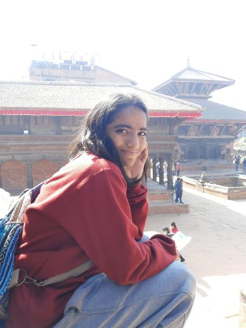

about

hey, this is diya, another human on this pale blue dot :-)
i am a keen tech and math enthusiast. i love diving into the vastness of the cosmos and want to explore it through quantum computing. i believe everyone should get equitable opportunities, and i work to make that true.
day to day, i do machine learning research at lehigh, currently on interpretability of chemical language models.
no matter how small, an act of kindness or initiative can change lives. if you are working on an initiative, a project or a startup like that, don't just say hello. talk to me about books, politics, wellness, and whatever small thing you are doing to make an impact on the world.
research
mechanistic interpretability of chemical language models (april 2026 to present)
i train top-k sparse autoencoders on 1.7m polymer embeddings from a chemical language model (poly4mer / smi-ted), then use logistic regression and zero-ablation to test which learned features encode molar group information. first author, poly4mer-sae: a controllable polymer llm for understanding molar structures and beyond, in preparation.
diffusion models for atmospheric turbulence super-resolution (summer 2026)
i benchmarked a vae, a cnn u-net, an adversarial neural operator, ddpm, and ddim on the johns hopkins turbulence database. the adversarial neural operator approaches state of the art with fewer training samples, and diffusion models outperform the rest.
speckle analysis of actin dynamics at the lamellipodium (summer 2024)
i built models to classify single-particle trajectories across 60+ data sheets, and presented at the lehigh research symposium.
publications
an approach for detection of atrial fibrillation using quantum sensor in magnetic induction tomography (mit) (2022)
download
abstract
atrial fibrillation (af) is the most common sustained cardiac rhythm disorder characterized by rapid and irregular beating of the atrial chambers of the heart. the prevalence of af is expected to double in the next decades, creating the threat of a global medical challenge. causing more deaths in developed countries than in developing countries, the timely detection of af is still not achieved due to the lack of precise diagnostic and guiding tools, questioning the scientific and technological society of the 21st century. therefore, we identify a promising novel solution of a quantum sensor in mit as a precise diagnostic tool for the detection of atrial fibrillation. a quantum sensor is applied in the system as an excitation detection agent, designed mainly for biomedical applications. the feasibility of this method makes it a promising tool also for other areas such as neurology and oncology.
low cost hot air balloon (2021)
download
abstract
we developed a lesson-plan and bill of materials which teach students how to build a low-cost high-altitude balloon capable of reaching near-space. this project develops a new method of preparing for and solving the challenges of near space, performing near space experiments using a cost-effective payload tied to a hot air balloon, which requires high skills like problem solving, proper planning, deep analysis, tracking and recovery. hot air balloon payloads provide information on the atmosphere, the universe, the sun, and the near-earth and space environment.
pathways to high temperature superconductors (2021)
abstract
high-temperature superconductivity, characterized by zero resistivity, is one of the prominent research areas, discovered accidentally in 1911 by the dutch physicist h. kamerlingh onnes (1853–1926) when he used liquid helium to cool mercury at 4.2 k. ever since, several breakthroughs have been made toward room temperature: yttrium-barium-copper-oxide at 77 k, h2s above 200 k, and most recently a mix of hydrogen sulfide, hydrogen, and methane at 15 c (288 k). however, the biggest questions surrounding high-temperature superconductivity involve the pathway to low pressures as well, so our primary focus is to find a room temperature superconductor at low pressure, enabling extensive practical applications. once a novelty, superconductivity leapt into the scientific mainstream. perhaps, if nature is kind, it will leap into the consumer mainstream with 21st century advancements.
projects
skillion capstone: facial and object recognition (2026)
an end-to-end recognition system with yolo, facenet, and mtcnn, built with sponsors and shipped as a working mvp in one semester.
alexa assistant for laboratory procedures (2023 to present)
a voice app in python that guides scientists through materials science procedures and lab equipment. i lead the project at the nano human interface lab and mentor new lab programmers.
veggies: connecting farmers with tech
an android app that uses machine learning to ease farming work: timely crop disease detection, weather alerts, a marketplace for selling produce, and crop suggestions by season, location, and soil ph.
writing
welcome to my ted talk :-) i wrote a short review of meditations by marcus aurelius and hisila by hisila yami. if you feel the same about the books, or don't, let's have a short book talk. happy reading!
book review: read of the year 2022 (medium, march 2022)
leadership
president, girls who code, lehigh chapter (august 2024 to may 2026)
recruited 50+ members, led 15+ events, and secured $9,000+ in sponsorships for the harvard wecode conference. awarded the student life and leadership award, and named distinguished tech fellow.
education
lehigh university, bs computer science, minor in applied mathematics, expected may 2027.
python, java, c++, c, go, javascript, assembly, cuda, linux, hpc / pytorch, tensorflow, keras, scikit-learn, hugging face, langchain, numpy, pandas